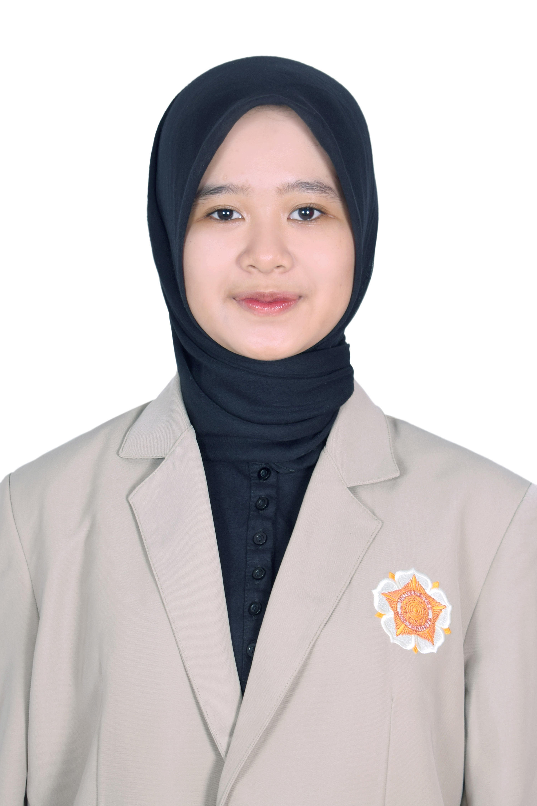

Lindi Diani Tirasafira

Tentang Saya
Saya adalah seorang mahasiswa semester 6 Prodi D4 Manajemen Informasi Kesehatan Universitas Gadjah Mada. Saya memiliki ketertarikan dalam kodifikasi penyakit dan tindakan dengan ICD-10, ICD-9 CM, dan ICD O.
Pendidikan
- 2022 - Sekarang D4 Manajemen Informasi Kesehatan Universitas Gadjah Mada
- 2019 - 2022 SMA Negeri 1 Kalasan
- 2016 - 2019 SMP Negeri 1 Ngemplak
Pengalaman PKL dan Kerja
- Juni - Agustus 2023: Praktik Kerja Lapangan di RSUD Wonosari
- Januari - Februari 2024: Praktik Kerja Lapangan di Puskesmas Mergangsan
- Agustus - Desember 2024: Asisten Praktikum di Prodi Manajemen Informasi Kesehatan
- Januari 2025: Praktik Kerja Lapangan di Kementerian Kesehatan Republik Indonesia
Pengalaman Proyek
Prestasi
Kontak